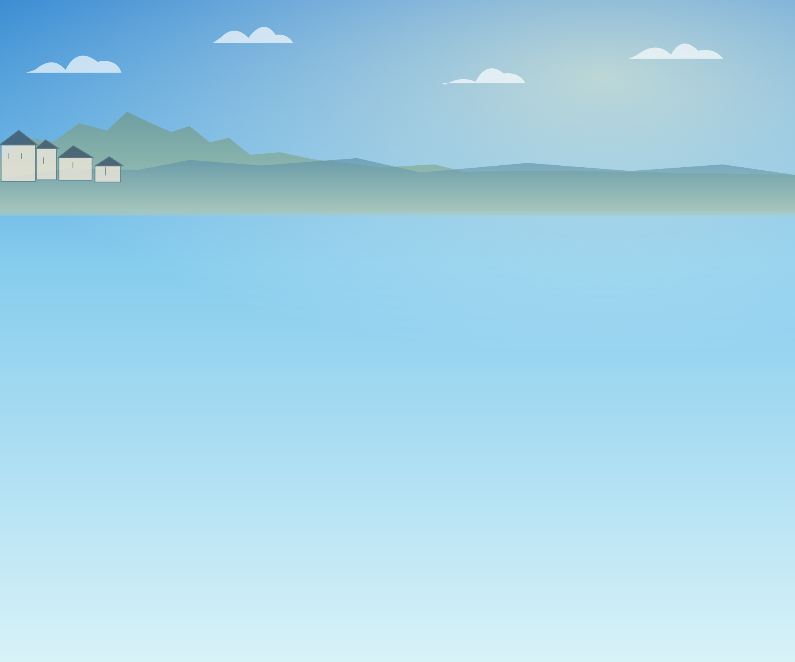
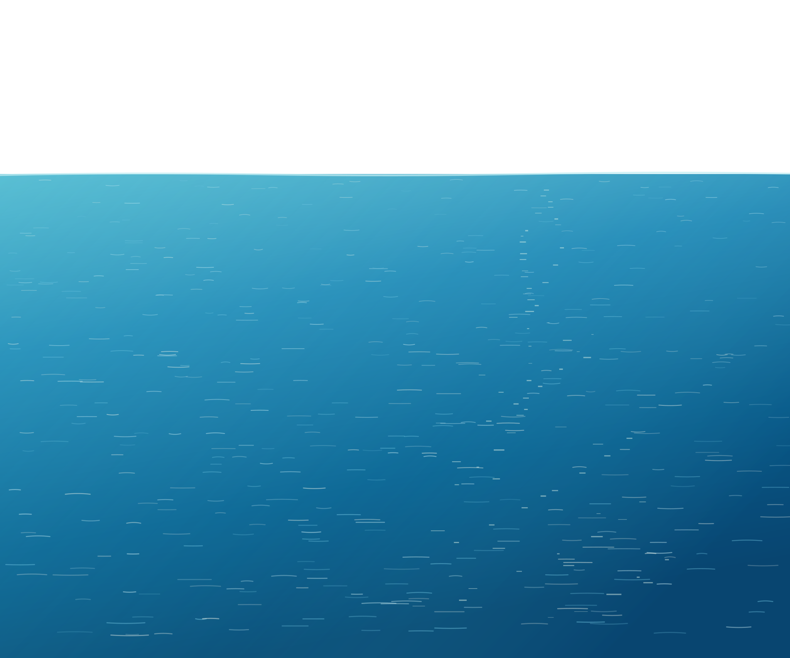
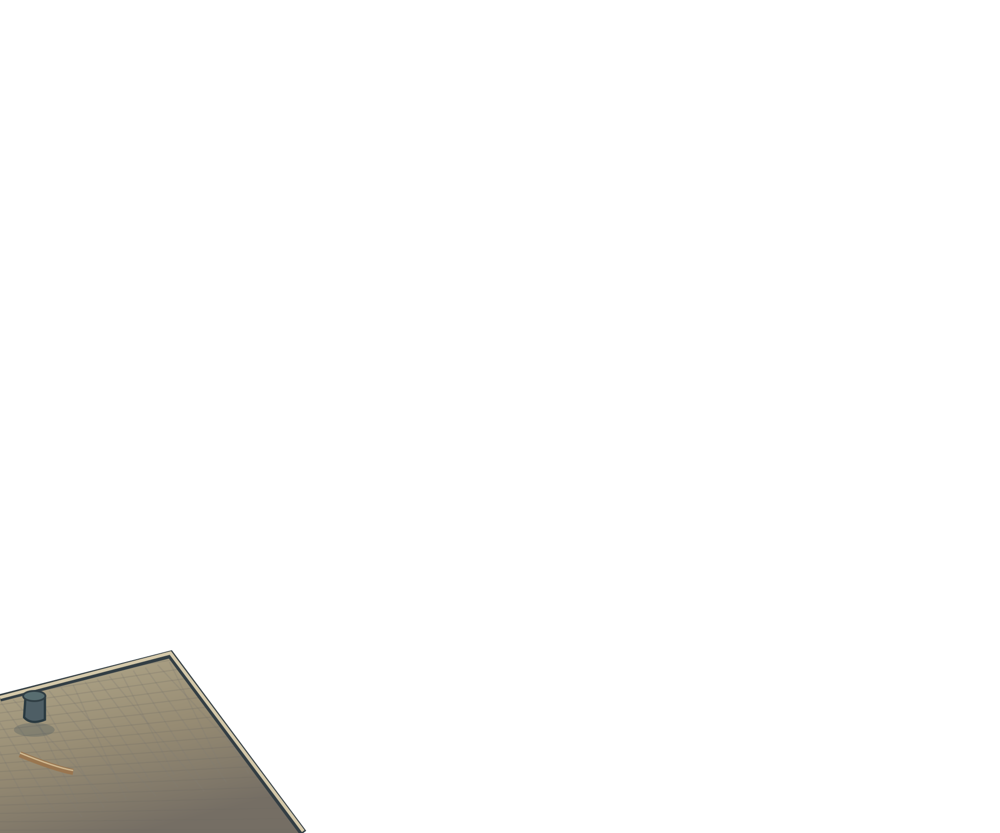

未承認｜QAワールド試作
検証範囲
カメラがプレイヤー付近から釣り餌へ移動し、旧画面外にも海が続くか確認する。右上の進行方向は、桟橋・猫・ロープなどを置かない。
キャラクター・装備・高品質な海/桟橋の完成素材ではありません。Cast/Resultの実ゲームプレイ確認ではありません。



カメラがプレイヤー付近から釣り餌へ移動し、旧画面外にも海が続くか確認する。右上の進行方向は、桟橋・猫・ロープなどを置かない。
キャラクター・装備・高品質な海/桟橋の完成素材ではありません。Cast/Resultの実ゲームプレイ確認ではありません。